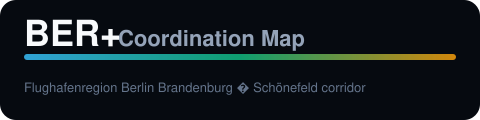

<!DOCTYPE html>
<html lang="en">
<head>
  <meta charset="utf-8" />
  <title>BER+ slide</title>
  <style>
    * { box-sizing: border-box; margin: 0; padding: 0; }
    body {
      width: 1920px; height: 1080px; overflow: hidden;
      font-family: "Segoe UI", system-ui, sans-serif;
      background: linear-gradient(145deg, #0c1220 0%, #060a10 55%, #0a1628 100%);
      color: #f8fafc;
    }
    .frame { display: flex; flex-direction: column; height: 100%; padding: 48px 56px; }
    .brand { display: flex; align-items: center; gap: 16px; margin-bottom: 28px; }
    .brand img { height: 52px; width: auto; display: block; }
    .brand span { font-size: 13px; letter-spacing: 0.14em; text-transform: uppercase; color: #94a3b8; }
    .ribbon { height: 4px; border-radius: 2px; background: linear-gradient(90deg, #38bdf8, #10b981, #f59e0b); margin-bottom: 32px; opacity: 0.9; }
    h1 { font-size: 44px; font-weight: 700; margin-bottom: 12px; color: #f8fafc; }
    .subtitle { font-size: 22px; color: #94a3b8; margin-bottom: 28px; max-width: 1200px; line-height: 1.45; }
    .content { flex: 1; display: flex; gap: 40px; min-height: 0; }
    .text-col { flex: 1; font-size: 26px; line-height: 1.55; color: #e2e8f0; }
    .text-col ul { padding-left: 28px; }
    .text-col li { margin-bottom: 14px; }
    .text-col ol { padding-left: 28px; }
    .text-col ol li { margin-bottom: 12px; }
    .fig-col { flex: 1.15; display: flex; align-items: center; justify-content: center; min-height: 0; }
    .fig-col img { max-width: 100%; max-height: 720px; border-radius: 12px; border: 1px solid rgba(255,255,255,0.12); box-shadow: 0 24px 80px rgba(0,0,0,0.45); }
    .full-fig { flex: 1; display: flex; align-items: center; justify-content: center; }
    .full-fig img { max-height: 780px; max-width: 92%; border-radius: 12px; border: 1px solid rgba(255,255,255,0.12); }
    .title-center { flex: 1; display: flex; flex-direction: column; justify-content: center; align-items: center; text-align: center; }
    .title-center h1 { font-size: 56px; margin-bottom: 16px; }
    .title-center .subtitle { font-size: 28px; }
    .url { margin-top: 32px; font-size: 24px; color: #38bdf8; }
    table { width: 100%; border-collapse: collapse; font-size: 20px; margin-top: 8px; }
    th, td { border-bottom: 1px solid rgba(255,255,255,0.12); padding: 14px 12px; text-align: left; vertical-align: top; }
    th { color: #fbbf24; font-weight: 600; }
    .footer { display: flex; justify-content: space-between; align-items: center; padding-top: 20px; font-size: 14px; color: #64748b; }
    .thanks { flex: 1; display: flex; flex-direction: column; justify-content: center; align-items: center; text-align: center; gap: 24px; }
    .thanks h1 { font-size: 64px; }
    .thanks p { font-size: 26px; color: #94a3b8; max-width: 900px; line-height: 1.5; }
  </style>
</head>
<body>
  <div class="frame" id="root"></div>
  <script>
    const SLIDES = {
      title: () => `
        <div class="brand"><span>June 12 · 2026</span></div>
        <div class="ribbon"></div>
        <div class="title-center">
          <h1>BER+ Coordination Map</h1>
          <p class="subtitle">Matching · visibility · corridor intelligence — one war-room screen</p>
          <p class="url">https://ber-war-map.vercel.app/</p>
        </div>`,
      agenda: () => slideText("Agenda", null, `<ol>
        <li>Corridor context — why coordination matters now</li>
        <li>Live platform walkthrough</li>
        <li>Member paths &amp; match review</li>
        <li>Resilience programme anchor (Pilot-1)</li>
        <li>Next steps for BER+ &amp; members</li></ol>`),
      priorities: () => slideText("Four coordination priorities", null, `<ol>
        <li><strong>Matching</strong> — connect members to land, peers, and corridor assets</li>
        <li><strong>Visibility</strong> — shared view of gewerbe land, industry, power, transport</li>
        <li><strong>Member value</strong> — personalized paths and evidence on the map</li>
        <li><strong>Alignment</strong> — one briefing surface for leadership</li></ol>`),
      "why-now": () => slideText("Why the corridor, why now", null, `<ul>
        <li>Grid congestion and <strong>Netzanschluss</strong> shape where gewerbe can grow</li>
        <li>FBB / FEW energy and resilience targets drive near-term investment</li>
        <li><strong>SEGRO Pilot-1</strong> (2 ha) anchors Phase I on the map</li>
        <li>Members need asset visibility and qualified introductions</li></ul>`),
      "war-room": () => slideWithFig("War room overview", "fig01-war-room-overview.png", `<ul>
        <li>BER+ corridor ribbon &amp; Pilot-1</li><li>Mitglieder and influence zones</li>
        <li>OSM land, industry, power, transport</li><li>Member-linked highlights</li></ul>`),
      "ber-paths": () => slideWithFig("BER+ Paths — strategic framing", "fig02-coordination-paths.png", `<ul>
        <li>Neutral regional host for the Flughafenregion</li>
        <li>Matching, visibility, intelligence in one place</li>
        <li>Action paths: pilot, platform, matching, advocacy</li></ul>`),
      capabilities: () => slideText("Platform capabilities by theme", null, `<table>
        <tr><th>Theme</th><th>What members gain</th><th>On the platform</th></tr>
        <tr><td>Matching</td><td>Qualified links</td><td>Giant graph + match review</td></tr>
        <tr><td>Visibility</td><td>Land &amp; infra context</td><td>OSM Intel + land anchors</td></tr>
        <tr><td>Member value</td><td>Role-specific guidance</td><td>Member path + sign-in</td></tr>
        <tr><td>Coordination</td><td>Shared briefing</td><td>War room + timeline</td></tr></table>`),
      mitglieder: () => slideWithFig("Mitglieder on the map", "fig03-mitglieder-matching.png", `<ul>
        <li><strong>14 members</strong> across five categories</li>
        <li>OSM link counts per member</li>
        <li>Tailored paths: BUWOG, SEGRO, WFG</li></ul>`),
      "osm-intel": () => slideWithFig("OSM Intel — assets &amp; infrastructure", "fig04-osm-intel.png", `<ul>
        <li>Land parcels (area, suitability)</li><li>Industry and logistics zones</li>
        <li>Power and transport corridors</li><li>BER+ curated land anchors</li></ul>`),
      "member-path": () => slideFullFig("Member path — evidence on the map", "fig05-member-path.png"),
      "matching-map": () => slideWithFig("Matching map — corridor network", "fig07-giant-matching-map.png", `<ul>
        <li>Overview or member <strong>focus</strong></li><li>Category and layer filters</li>
        <li>Thousands of scored links</li></ul>`),
      "match-review": () => slideWithFig("Match review — map + decision", "fig06-matching-review-popup.png", `<ul>
        <li>Embedded site preview</li><li>Match score and rationale</li>
        <li>Pass / Save review queue</li></ul>`),
      mobile: () => slideWithFig("Mobile — field briefings", "fig08-mobile-war-room.png", `<ul>
        <li><strong>Map · Explore · Member · Match</strong></li>
        <li>Bottom nav and slide-up panels</li>
        <li>Same data on phone and desktop</li></ul>`, "fig01-war-room-overview.png"),
      resilience: () => slideText("Resilience programme on the timeline", null, `<ul>
        <li><strong>Pilot-1:</strong> PV + BESS + EWF on SEGRO site</li>
        <li>Programme Phases I–III on shared timeline</li>
        <li>Briefing tab: grid and resilience context</li></ul>`),
      "how-berplus": () => slideText("How BER+ can use the platform", null, `<ul>
        <li><strong>Pilot</strong> — validate with SEGRO</li><li><strong>Host</strong> — war-room sessions</li>
        <li><strong>Match</strong> — member–asset rules</li><li><strong>Intelligence</strong> — corridor RSS</li>
        <li><strong>Advocate</strong> — export map evidence</li></ul>`),
      questions: () => slideText("Questions for the room", null, `<ol>
        <li>Which theme leads the next 12 months?</li>
        <li>Which 3–5 Mitglieder pilot verified OSM links?</li>
        <li>Who owns quarterly data refresh?</li>
        <li>First joint step after Pilot-1?</li></ol>`),
      summary: () => slideText("Summary", null, `<ul>
        <li><strong>One map</strong> — match, visibility, programme, intelligence</li>
        <li><strong>Live today:</strong> ber-war-map.vercel.app</li>
        <li><strong>Next:</strong> pilot members, refresh OSM, embed in briefings</li></ul>`),
      thanks: () => `
        <div class="brand"></div>
        <div class="ribbon"></div>
        <div class="thanks">
          <h1>Thank you</h1>
          <p>Questions &amp; live demo<br><span style="color:#38bdf8">https://ber-war-map.vercel.app/</span></p>
        </div>`
    };

    function slideText(title, sub, html) {
      return `<div class="brand"><span>BER+ Coordination Map</span></div>
        <div class="ribbon"></div><h1>${title}</h1>${sub ? `<p class="subtitle">${sub}</p>` : ""}
        <div class="text-col">${html}</div>
        <div class="footer"><span>Flughafenregion Berlin Brandenburg</span><span>12 June 2026</span></div>`;
    }
    function slideWithFig(title, fig, html, fallback) {
      const src = fig;
      return `<div class="brand"><span>BER+ Coordination Map</span></div>
        <div class="ribbon"></div><h1>${title}</h1>
        <div class="content"><div class="text-col">${html}</div>
        <div class="fig-col"></div></div>
        <div class="footer"><span>ber-war-map.vercel.app</span><span>12 June 2026</span></div>`;
    }
    function slideFullFig(title, fig) {
      return `<div class="brand"><span>BER+ Coordination Map</span></div>
        <div class="ribbon"></div><h1>${title}</h1>
        <div class="full-fig"></div>
        <div class="footer"><span>ber-war-map.vercel.app</span><span>12 June 2026</span></div>`;
    }

    const id = new URLSearchParams(location.search).get("slide") || "title";
    const render = SLIDES[id] || SLIDES.title;
    document.getElementById("root").innerHTML = render();
  </script>
</body>
</html>
